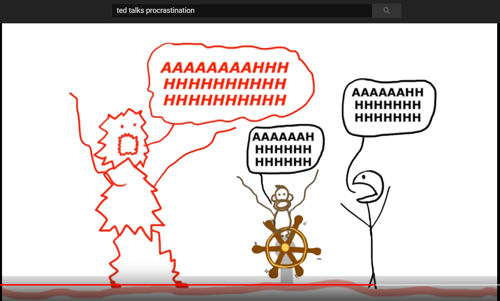
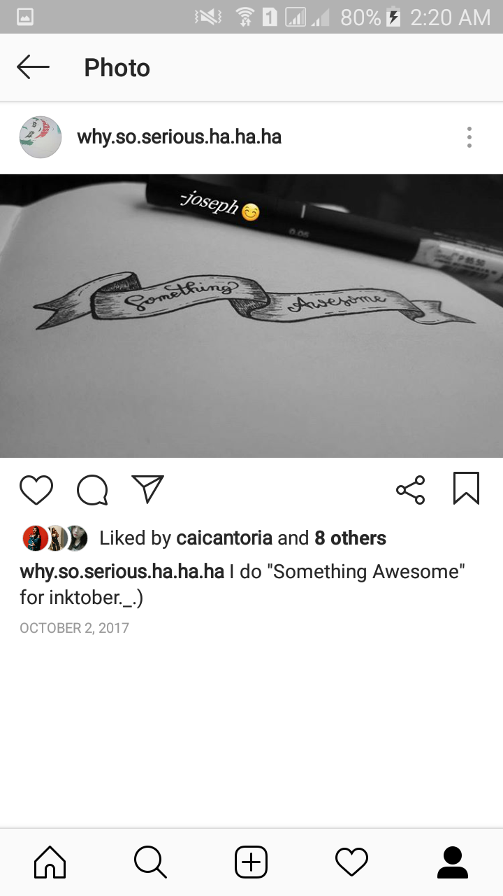
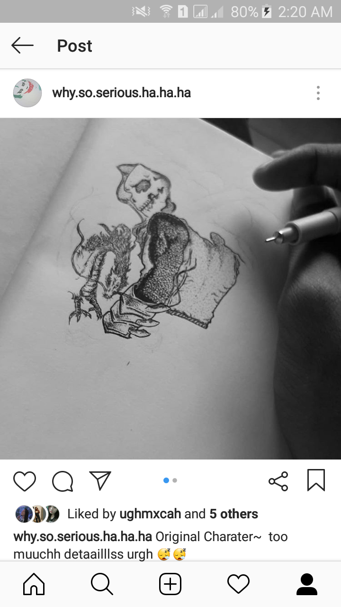

A procrastinator...

There are 3 components of a procrastinator;
the Rational Decision-Maker (which is me);
Instant Gratification Monkey (which is why I procrastinate);
and the Panic Monster (which is why I do things well asap a.k.a. deadline etc.).
Those component encircle the life of a procrastinator,
which is me and had pushed my limits that have exceeded my expectation.
"A student in bed will remain on bed unless acted upon by a large panic" -FFTM
A Minimalist...

Being a minimalist is a big challenge to myself,
I need to face different things such as OCD, anxiety, etc.
Everything is limited and things should look neat,
but it pushes my limit to undergo a deep thinking to be able to overcome it.
For example, me being a poet, free style is not my forte;
a programmer, for my codes should be coordinated/cleanly coded,
an artist, for not doodling;
or by simply doing house choirs.
"Programming is more like PROgramming, because a piece of my sanity is within my very code" -me
An Artist...

An Artist, it is, a failed artist,
as I lose my thoughts, my hand moves in a special way,
but what I hate the most is an unfinished thought; comes with unfinished art.
"Don't confuse borrowed power with your own ability."